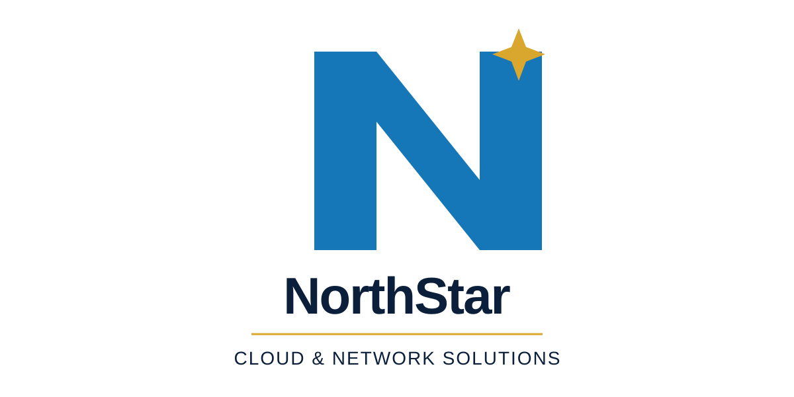

IT support and troubleshooting
Hands-on help with computers, devices, printers, and network connectivity problems.
Learn more about it support and troubleshootingIT support and troubleshooting
NorthStar Cloud & Network Solutions currently offers IT support and troubleshooting. Network setup, cloud support, Linux and Windows administration, and server administration are planned service areas.

IT support and troubleshooting is offered now. The other five areas are planned. Every area follows the same method: understand the problem, make careful changes, and write down what was done.
Hands-on help with computers, devices, printers, and network connectivity problems.
Learn more about it support and troubleshootingSetting up, reviewing, and troubleshooting networks.
Learn more about network setup and supportHelp with organizing and understanding cloud accounts and resources.
Learn more about cloud support for microsoft azure and awsGeneral care of Linux and Windows systems.
Learn more about system administration for linux and windowsBasic setup and administration of Linux servers.
Learn more about linux server setup and administrationWindows Server and the user accounts and policies built on it.
Learn more about windows server and identity administrationPlanned services are not currently confirmed as available.
Good IT work is mostly good habits. NorthStar's intended method is to listen first, change one thing at a time, and leave clear notes so nothing about a setup stays a mystery.
Describe what is happening and what you need.